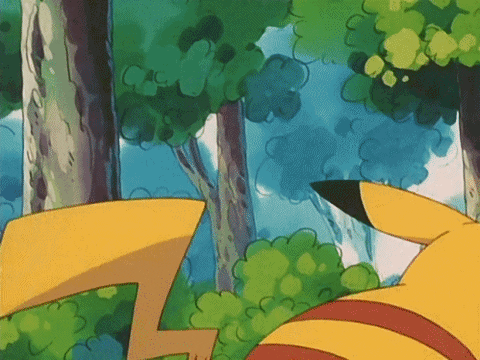

Home
Tentang Saya
Home
Tentang Saya
Berisi materi materi kelas XI Kolese kanisius
Web ini dibuat oleh saya untuk membantu dalam belajar saya selama disekolah. Web ini dibuat agar saya atau teman teman semua dapat melihat materi materi pembelajaran kelas 11.
Didalam Web ini berisi beberapa Materi seperti : Informatika ada HTML dan CSS, ada Matematika Minat ada Persamaan Lingkaran, Kedudukan titik dan garis terhadp lingkaran dan persamaan garis singgung lingkaran.Selain itu ada Biologi seperti Organisasi tinggal Sel dan Organisasi tingkat Jaringan. Ada juga Ekonomi yang berisi Inflasi dan Jurnal Umum. Ada juga Matematika Wajib Berisi Aritmatika dan Geometri. dan terahkir ada Sejarah yang berisi Kolonialisme dan Imperialisme serta Sistem Tanam Paksa


Kolese Kanisius